1 研究背景与动机
大模型办公助手正在快速普及，但企业与机构在涉密文档（合同、薪酬、病历、客户资料）处理上面临一个根本矛盾：数据越敏感，越需要 AI 的能力，却也越不能把数据交出去。无论是调用云端 API，还是把对话写入本地日志、向量库与审计文件，每一个跨越本地边界的环节都可能成为泄露面。
现有的通用做法存在结构性缺陷。"提示用户不要粘贴敏感信息"依赖人的自觉而不可靠；"整体关闭联网"则牺牲了云端强模型的能力。二者都没有把隐私保护变成系统本身的属性。我们的出发点是：把隐私保护从"使用约定"下沉为"架构约束"——让大模型在物理上"看不见"敏感数据，却依然能把活干完。这既保留了可用性，又从机制上消除了泄露面。
围绕这一目标，我们把办公智能体的泄露面归纳为四类，并逐一设计防线：
出网面
敏感明文随 prompt 发往云端，离开本地即失控 → 脱敏网关。
落盘面
会话记录、向量库、摘要把真实隐私写进磁盘 → 加密映射 + 入库即脱敏。
留痕面
审计日志本为追溯，却可能反成二次泄露源 → 审计只存脱敏预览。
执行面
智能体具备写盘/删除/执行能力，被诱导即造成物理破坏 → 沙箱 + 白名单 + 熔断审批。
2 关键挑战
把上述目标做成一个可用的系统，需跨越四道核心挑战：
其一，可用性与不可见性的张力。若把敏感值简单删除，模型会因上下文断裂而无法作答。必须在"抹去真实值"与"保留语义结构"之间取得平衡——这正是我们采用占位符化而非删除的设计动机：占位符保留实体类型与位置信息，使模型仍能理解"这里有一个手机号"并据此组织回答。
其二，识别的召回与精确难以两全。中文办公文本里，手机号、身份证、银行卡、人名、金额形态多变（全角、分段、国际前缀、单位混排），既要高召回不漏，又不能误伤订单号、版本号、日期等业务数字。我们以"正则粗筛 + 程序化精验"两段式应对。
其三，防护必须贯穿全链路，而非只在入口。脱敏若只做在用户输入，落盘的会话、审计、向量库、以及模型输出的还原环节仍会泄露；任一环节旁路，整体即失效。这要求把同一套脱敏管线强制施加到所有数据出入口。
其四，可证明性。"隐私有效"不能靠宣称，需要在明确的威胁模型下、以可复现的攻击实验来度量。这驱动我们设计了第 5 节的攻防评测。
3 系统概览与架构
系统采用「GUI 层 — 推理引擎层 — 安全内核层」三层解耦。安全内核由隐私引擎、策略引擎、密钥管理、审计日志四个独立模块组成，可脱离 GUI 单独测试与评测。数据在系统内的旅程为：
用户输入 $x$ ⟶ 脱敏 $\hat{x}$ ⟶ ReAct 推理 / 工具调用 ⟶ 结果脱敏 ⟶ 还原 $D(\hat{y})$ ⟶ 呈现用户
其中模型侧全程只接触 $\hat{x}$ 与占位符化的工具返回；每一环节的事件均同步写入哈希链审计。算力支持本地 Ollama（数据不出网）与 OpenAI 兼容云端（出网内容已脱敏）双模式。
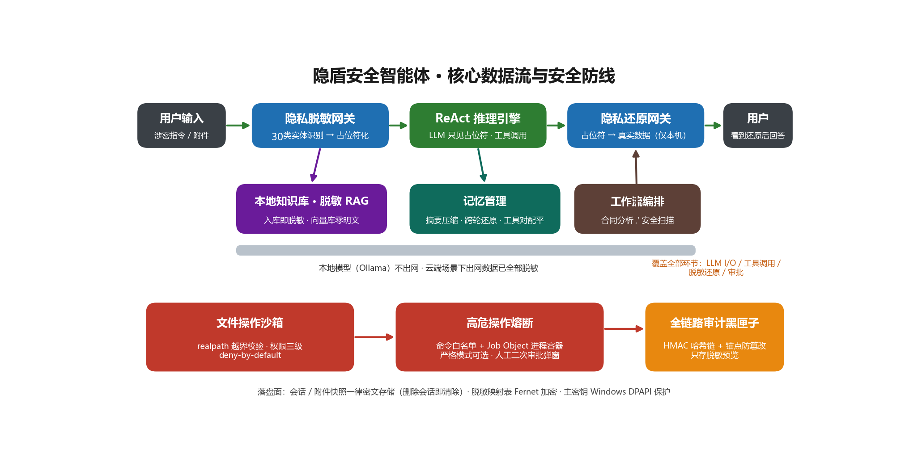
3.1 内核不可插件化，其余皆可插（V3.4 新增）
把能力做成插件，是"让系统长大"的常规做法；但对安全产品，它同时是最危险的改造——一旦脱敏豁免、命令白名单、审批放行、审计写入这些判定权可以被第三方代码接管，"安全"本身就不再由我们掌握。因此我们把边界画在能力性质上，而不是画在模块归属上：
| 层 | 内容 | 是否可插件化 |
|---|---|---|
| 安全内核 | 脱敏网关、策略白名单、审批放行、审计哈希链、沙箱文件工具、模型接入 | ❌ 永不开放（判定权不可外包） |
| 能力扩展 | 补充识别敏感实体、扩展附件解析、工作流模板、导出格式、审批决策提示 | ✅ 开放，且只能"做加法" |
"只能做加法"不是口号，而是逐条落在代码里的可验证约束：
- 识别只增不减：插件通过 register_extra_recognizer 追加命中区间，内核会复核每一条（越界 / 超长 / 跨行 / 重叠 / 超量丢弃），实体类型强制加 PLUGIN_ 前缀；内核不存在"让某段内容免于脱敏"的入口——插件写坏了最坏结果是"这条没生效"，不会造成泄露，也不可能造成豁免。
- 模板不降审批：插件贡献的工作流模板由内核注册，高危步骤（写盘 / 删除 / 执行命令 / 导出文件）一律强制人工审批，插件声明 auto 也会被纠正并在界面标注"审批由内核强制"；模板 id 不得覆盖内核模板，未知工具整条拒绝。
- 内核兜底不可顶替：导出格式名（json/html/md/docx）为内核保留，插件占用即拒；附件解析只在"内核本来不支持的格式"上优先，内核原生格式（PDF/Word/Excel/文本/音频）始终以内核为准。
- 能力跟着开关走：每次启停插件都重算能力集合（注销模板、摘除识别器），审计详情记录注册/注销明细——"界面显示已停用、实际还在生效"在架构上不允许出现。
- 不允许静默失效：钩子函数名与钩子名不一致时不再静默跳过，而是记为错误；界面提供插件自检逐个确认声明的钩子都有同名实现；配置文件读不出来必须告警（识别类插件的静默失效等于"以为在保护、实际没保护"）。
工程实现上，内核只暴露两个"只增不减"的扩展点（core/privacy_engine.py 的追加识别器注册表、core/workflow.py 的外部模板注册），其余能力（解析优先级、导出分发、能力同步）由服务层编排，yindun/core/ 不认识插件。插件契约集中在 yindun/plugins/host.py：钩子清单、载荷净化、禁用能力黑名单、依赖门禁、超时隔离。随包内置 7 个插件（自定义敏感词表 / 扩展附件解析 / 办公工作流模板包 / 导出格式扩展 / 审批决策提示 / laya 风险分级 / 操作意图预判），全部默认关闭、按需启用。
4 隐私保护机制
4.1 脱敏算法的形式化定义
设文本全集为 $\mathcal{X}$，敏感实体识别器 $\mathcal{E}:\mathcal{X}\to 2^{\mathcal{X}}$ 输出文本中的敏感实体集合。隐私网关定义为一个随机化映射：
其中 $\hat{x}$ 是将每个实体 $e_i$ 替换为占位符 $p_i$ 后的文本（送入模型），$M$ 为映射表，真实值以密钥 $k$ 下的 Fernet 密文存储。占位符形如 $p_i=[\,\mathsf{Type}_i\_\,i\_\,r_i\,]$，$r_i\leftarrow\{a\text{–}z,0\text{–}9\}^4$ 为随机 nonce。还原算子 $D_k$ 将输出中的占位符解回明文：
① 网关机密性（架构保证）：对任何已被识别出的实体，其明文出现在出网文本中的概率为 0——这是占位符替换 + 位置化替换 + 加密映射的直接后果，不依赖语料，也不随识别覆盖率变化。
② 识别覆盖率（经验测量）：真实文档中的敏感值有多少能被识别器认出来。它必然受限于规则覆盖的形态与评测语料，任何确定性规则系统都不可能对未知形态给出保证，本工作报告的是实测值而非承诺值（见第 5 节留出集与未覆盖形态清单）。
如果只报告②的一个漂亮数字（例如"召回 100%"），实际上是把①的架构保证错误地读成了全系统的覆盖率——这是本报告在 V3.4.6 中专门修正的表述缺陷。
在既定威胁模型下，系统主张以下四条性质（均针对已被识别的实体集 $\mathcal{E}(x)$）：
- 机密性（Confidentiality）：对任意 $e\in\mathcal{E}(x)$，$\Pr\big[e \subseteq \hat{x}\big]=0$——模型侧无明文（实验 5.3.1 实测出网明文实例 $0$）。注意该性质的量词落在 $\mathcal{E}(x)$ 上：它保证的是"识别出的不看、没识别的不保证"，因此必须与识别覆盖率联合阅读。
- 可逆性（Recoverability）：$D_k(A_k(x))=x$（实验 5.3.3 实测往返逐字一致 $60/60$，另在真实格式文档评测中复验 8 种格式）。
- 还原不可伪造（Unforgeability）：攻击者在不掌握 $M$ 时构造命中他人映射的字面量，成功概率受 nonce 空间约束 $\Pr[\text{collide}]\le 36^{-4}\approx 5.9\times10^{-7}$（实验 5.3.4 劫持 $0/500$）。
- 持久化机密（Persistence-Confidentiality）：无密钥 $k$ 时，磁盘产物 $\hat{x},\,M,\,\text{Audit},\,\text{Vector}$ 均不可恢复明文（实验 5.3.6–5.3.8 命中 $0$）。
第二轮红队另发现并已修复两类实现层缺陷（不属机制边界）：替换未按命中位置定位导致同串错位漏脱敏、人名窗口会把字段标签首字吞入（如"张伟电"）；修复后回归复测：正样本泄露 0、负样本误伤 0（阈值 0）。
执行沙箱边界（V3.4.5 更新）：命令执行是策略层控制（白名单 + 子命令级收口 + 脚本 realpath 沙箱归属校验 + 子进程环境收敛 + 人工审批 + 审计）叠加进程容器（Windows Job Object：句柄即杀——应用退出/超时即终止整棵进程树，进程数上限 64），并可选严格模式直接禁用解释器（仅留只读命令）；仍不是 OS 级隔离——被放行的 .py 脚本以当前用户权限运行，理论上仍可触达沙箱外资源；需要更强隔离时应配合系统级方案（受限账户/虚拟机）。
可还原性缺陷（V3.4.5 修复，属实现层）：真实格式文档评测发现——anonymize 的后续规则运行在"已含占位符"的文本上，可能命中占位符内部或跨越其边界（如 ADDRESS 分支把
[BANKCARD_0_xxxx]订单号 尾段当地址），产生交叉替换使真实值无法还原；现已把占位符改为对后续规则不透明（仅在非占位符片段上匹配），并修复银行卡尾部吞换行，回归断言"脱敏→还原逐字一致"（随机 nonce 采样）。评测口径边界（V3.4.6 取代 V3.4.4 表述）：本报告不主张任何形式的"全覆盖 / 零遗漏 / 召回率达标"。识别覆盖率一律给出分母（如 222/280）与语料规模，并同时公开未覆盖形态清单；"泄露 0 / 劫持 0 / 持久化命中 0"这类读数的量词一律落在已被识别的实体上，与识别覆盖率无关。本系统的效果陈述不构成对真实文档环境的普适安全保证。
4.2 识别与精验流水线
识别采用两段式：正则 $R_e$ 负责召回，程序化校验器 $V_e$ 负责精确，实体 $e$ 被判定为敏感当且仅当 $e\in R_e \wedge V_e(e)$。校验器针对不同实体类型实例化：手机号归一化后须恰为 11 位、银行卡须过 Luhn、身份证须过 GB11643 校验位（可选）、15 位证须命中地区码或触发词、人名须"姓氏表 ∩ 角色触发词窗口"。覆盖 20+ 类实体并按 GB/T 35273 思想做三级数据分级。
4.3 密钥体系
映射表真实值经 Fernet（AES-128-CBC + HMAC-SHA256）加密：$\mathrm{Enc}_k(\cdot)$。主密钥 $k$ 由密钥管理器统一托管，Windows 下经 DPAPI 按当前用户账户包裹：$k_{\text{stored}}=\mathrm{DPAPI}_{\text{user}}(k)$，磁盘仅存 $k_{\text{stored}}$，密钥文件移出项目目录并收紧 ACL。由此将"能否解密"归约为"是否为该 Windows 登录用户"，构成持久化机密性的信任根。
4.4 威胁模型与攻击博弈
我们按攻击者能力定义四类对手，并以博弈方式刻画安全性。记脱敏-还原系统为 $\Pi=(A_k,D_k)$，敏感实体集 $\mathcal{E}(x)$。
| 对手 | 能力 | 对应防线 |
|---|---|---|
| 黑盒 | 仅观察出网文本 $\hat{x}$ 与模型输出（被攻破的模型服务方、链路窃听者） | 机密性：$\hat{x}$ 无明文，注入亦无法泄露未掌握数据 |
| 黑盒·主动 | 可向待处理文档植入内容（伪造占位符、注入越权指令） | 还原不可伪造（nonce）；指令不改变"模型看不到明文" |
| 白盒 | 读取本地磁盘持久化文件（会话/审计/映射/向量库），但不在活动用户会话内 | 持久化机密：真实值密文存储，无 $k$ 不可解 |
| 白盒·持钥 | 劫持当前 Windows 用户会话、可调用 DPAPI 取回 $k$ | 超出防护目标：等价"用户本人"，是安全与可恢复性的既定边界 |
以出网泄露博弈为例：$\mathsf{Exp}^{\text{leak}}_{\Pi}(\mathcal{D})$ 中，对手从语料 $\mathcal{D}$ 取 $x$，观察 $\hat{x}=A_k(x)$，输出一个猜测值 $e^*$；若 $e^*\in\mathcal{E}(x)$ 则对手胜。机密性等价于 $\Pr[\mathsf{Exp}^{\text{leak}}\Rightarrow 1]=0$。还原劫持博弈 $\mathsf{Exp}^{\text{hijack}}$ 中，对手植入字面量占位符 $p^*$ 诱导 $D_k$ 将他人明文写入其可控输出，成功概率受 nonce 空间界定。
5 攻击实验与结果
5.1 评测协议：开发集 / 留出集分离（V3.4.6 重做）
复赛评审指出"评测基于规模有限的合成样本，结论不宜泛化"。这条意见指出的不是一个数字错误，而是方法论缺陷：若在用于调参的那份语料上报告召回率，得到的数字必然偏乐观。因此本版把评测拆成两套语料、两种角色，脚本与结果 JSON 均随仓库提供，可一键复现：
| 语料 | 规模 | 角色与纪律 |
|---|---|---|
| 开发集 tests/privacy_eval.py | 13 篇合成办公文本 / 41 个敏感实体 / 17 个业务数字负样本 | 规则设计与调参所用。只作为回归基线（锁定既有行为不回退），不得用作精度声明。 |
| 留出集 tests/privacy_holdout_eval.py | 60 篇随机化生成文档 / 280 个注入敏感值 / 80 个负样本 | 由固定种子确定性生成，注入值与开发集零重合（脚本内置自检）；规则冻结后一次性运行，数值如实记录。 若发现问题：走"发现 → 修复 → 换新种子重跑"，两次数值都留档；不在同一份留出集上反复调参（那会把留出集退化成开发集）。 |
留出集把注入值分成两个口径，分别统计、同时公开——既不用"口径"掩盖漏检，也不用"已知未覆盖"拖低在册指标：
- 在册形态：实体类型与写法都在引擎声明支持范围内（第 4.2 节的 $R_e\wedge V_e$ 流水线所覆盖的形态），计入识别覆盖率；
- 未覆盖形态：已知不支持或有意不拦的写法（固话、(at) 混淆邮箱、非 Luhn 数字串、无触发词/表格单元格人名、顿号列举第 2 个起的人名、复姓人名、汉字大写金额、点/斜杠分隔符变体）。单独成表全量公开，不计入在册召回。
5.2 识别覆盖率（留出集实测，非承诺值）
下表是 privacy_holdout_eval.py 在种子 20261017（60 篇 / 280 个注入敏感值）上的首次运行结果，未做任何后续调参：
| 口径 | 完整脱敏 | 占比 | 说明 |
|---|---|---|---|
| 在册形态 | 222 / 230 | 96.5% | 引擎声明支持的写法；未命中的 8 例全部是复姓人名（欧阳/司马/诸葛…未收录于姓氏表） |
| 未覆盖形态 | 0 / 50 | 0.0% | 已知不支持或有意不拦的写法，逐项见 5.4 节——公开列出，不作承诺 |
| 全量口径 | 222 / 280 | 79.3% | 把上两行合并后的诚实读数：不做口径挑选时的整体表现 |
| 业务数字负样本 | 0 / 80 误伤 | — | 订单号、日期、版本号、非 Luhn 数字串等须原样保留 |
| 往返一致性 | 60 / 60 | — | $D_k(A_k(x))=x$ 逐字一致（正确性不变量，非覆盖率指标） |
| 部分掩码（明文残留） | 0 例 | — | 长实体只被替换一段会留下明文碎片，本项零容忍 |
读数须知：79.3% 不是"系统的安全强度"，它只是"在一个明知包含未支持写法的语料上，逐字完整脱敏的比例"。安全相关的性质（表 2）与它无关——那些性质针对的是已被识别的实体，属于架构后果而非识别能力。反之，96.5% 也不能读作"真实文档上只会漏 3.5%"：留出集同样由我们的生成器构造，真实文档的形态分布更宽。两个数字都只是本次测量的如实记录。
5.3 架构性质实验（与识别覆盖率无关的保证）
| # | 实验（威胁） | 指标 | 结果 |
|---|---|---|---|
| 5.3.1 | 黑盒 · 出网泄露 $\mathsf{Exp}^{\text{leak}}$ | 出网文本中的实体明文实例 | 0 例 |
| 5.3.2 | 黑盒 · 误伤 | 业务数字误报率 | 0%（0/17 开发集 · 0/80 留出集） |
| 5.3.3 | 可用性 · 往返 | $D_k(A_k(x))=x$ 逐字一致 | 60 / 60 |
| 5.3.4 | 黑盒主动 · 还原劫持 $\mathsf{Exp}^{\text{hijack}}$ | 植入字面量劫持成功率 | 0 / 500 轮 |
| 5.3.5 | 黑盒主动 · 提示注入 | 模型可见上下文真实 PII 数 | 0 |
| 5.3.6 | 白盒 · 持久化扫描 | 落盘文件明文 PII 命中 | 0 |
| 5.3.7 | 白盒 · 审计预览 | 审计掩码后明文 PII 命中 | 0 |
| 5.3.8 | 白盒 · 无密钥还原 | strict 模式是否泄露明文 | 否（保留占位符） |
5.4 边界清单：哪些形态没有拦住，为什么
下表是留出集里未被完整脱敏的全部形态，按性质分成两类。这张表是本报告最重要的诚实性声明——它把"我们主张的保护"与"我们已知的缺口"分开摆出来。
| 形态 | 实测 | 性质与原因 |
|---|---|---|
| （一）声明支持、但实测未覆盖 —— 属覆盖缺口，须修复 | ||
| 复姓人名（欧阳/司马/诸葛/上官…） | 0/8 | 姓氏表只收录单字姓，复姓整体不在表内 → 触发词窗口无法命中。修复成本低（补复姓表），本轮按评测纪律未在同一留出集上继续调参，列入下一轮。 |
| （二）已知不支持 / 有意不拦 —— 非承诺范围，公开列出 | ||
| 表格 / CSV 单元格人名（与"姓名"表头不同行） | 0/10 | 人名识别依赖"触发词 + 20 字符窗口"，表格体无触发词。需结构化解析或 NER。 |
| 顿号列举中第 2 个起的人名 | 0/8 | 触发词窗口每次只取一个人名。扩大窗口会误伤以姓氏字开头的机构名（如"石家庄分公司"），属"宁漏不误伤"的既定取舍。 |
| 无触发词人名（如"该事项由张伟负责"） | 0/4 | 同上：无角色词/字段标签时不猜。可经 add_custom_names() 或自定义词表插件按名册精确匹配。例外（V3.6.11 新增）：同一句里已确认存在联系方式/证件类实体时，姓名按"共现"一并脱敏 （如「梁诚敬 13713068555 广州大学…」），机构名由后缀黑名单挡住不误伤。 |
| 固定电话（010-xxxxxxxx） | 0/4 | 未建模固话，避免与订单号、分机号、房间号大量冲突。 |
| (at) 等文本混淆邮箱 | 0/4 | 确定性规则不猜语义；强行匹配会大面积误伤正常括号文本。 |
| 非 Luhn 校验的 16 位数字串 | 0/4 | 按 ISO/IEC 7812 精验刻意放过，否则任意长数字串都会被当成卡号。 |
| 汉字大写金额（人民币壹拾伍万元整） | 0/4 | 未实现中文数字体系；合同场景真实存在，已列入路线图。 |
| 点 / 斜杠分隔符变体（手机 138.1234.5678、卡号点分、身份证斜杠） | 0/12 | 未实现这些分隔符。其中点分隔手机号若放开会与 IPv4 地址冲突（192.168.1.100 归一化后恰为 11 位），须先做歧义消解。 |
5.5 按类别的专项召回测试
开发集侧针对 11 类实体分别构造专项样本（25 例，含边界格式），与留出集相互独立。该表口径为全字面断言（V3.4.6 加固：要求样本中所有敏感字面量消失且输出出现占位符；旧口径只检查 4 位以上数字段，存在漏判空间）：
| 类别 | 召回 | 类别 | 召回 | 类别 | 召回 |
|---|---|---|---|---|---|
| 手机号 | 3/3 | 银行卡 | 2/2 | 金额 | 3/3 |
| 身份证 | 2/2 | 邮箱 | 2/2 | IP 地址 | 2/2 |
| API 密钥 | 2/2 | 人名 | 4/4 | 地址 | 2/2 |
| JWT | 1/1 | 口令字段 | 2/2 | 合计 | 25/25 |
局限（如实声明）：本机制是确定性脱敏而非差分隐私，不主张对"未被规则覆盖的实体类型"或"可由背景知识重识别的属性组合"提供保证。识别覆盖率是依赖语料的经验测量：开发集 13 篇 / 留出集 60 篇虽已分离，但两者均由我们构造，真实文档的形态分布更宽，实际覆盖率会低于本文读数。本报告不主张任何形式的"召回 100%"或"零遗漏"。评测脚本与结果 JSON 随仓库提供，可一键复现（含留出性自检与评测日志）。
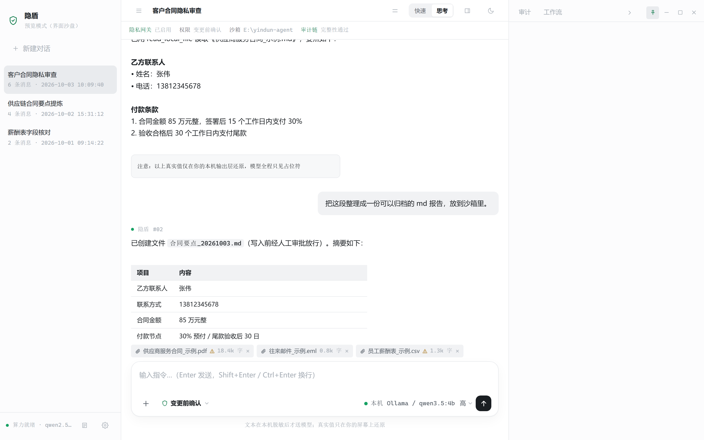
6 纵深防御与审计
隐私之外，智能体的物理副作用同样需要约束。系统对每个具备副作用的工具叠加多层防线，并以哈希链审计全程留痕。
路径沙箱（可读写范围）
目标路径先 realpath 化解符号链接 / junction，再以 commonpath 判定是否落在可读写范围内（范围可以是多个根，逐一比对）；文件名强制 basename，杜绝 ../ 穿越；写盘前对最终落点二次校验，拦截指向外部的链接跟随。范围是「默认可读写范围」且可在设置里改（V3.6.7 起可直接指到桌面或资料目录；V3.6.8 起默认范围 = 程序目录 + 用户桌面 / 文档 / 下载，按系统外壳的真实路径解析以兼容 OneDrive 重定向——这三个目录是人天天动的地方，把它们判成"越界"等于让智能体什么都做不了）：范围内的操作按权限档走；范围外按档位判定（计划拒绝 / 变更前确认逐次审批且弹窗显示完整真实路径 / 自主与完全访问放行），并且一律写进审计、工具结果里明写「本次操作在可读写范围之外：<路径>」——不做静默放行。系统目录与凭据/密钥类路径是与档位无关的硬地板（deny / confirm），放行权只属于宿主策略层（模型自带的"允许越界"参数一律丢弃）。文件管理族（移动 / 复制 / 重命名 / 批量改后缀 / 新建目录）与读写工具同受这套判定：两端路径都判、目标已存在时默认拒绝覆盖、批量改名先整批预检（撞车即整批拒绝，不做一半）。
熔断审批
策略引擎（deny-by-default）判定的高危操作挂起后台线程；弹窗展示申请工具、目标路径与即将执行的命令 / 即将写入的内容（可滚动核对），人工授权才放行，超时自动驳回。
命令白名单
命令名限 $\{$python, pip, git, echo$\}$，shlex 拆为 argv 后以 shell=False 执行。参数级拦 shell 操作符与绝对系统路径；子命令级只留只读入口——python 仅能执行沙箱内 .py（-c/-m/标准输入一律拒绝），pip/git 仅只读子命令，git 另拦 -c/--git-dir/--upload-pack。运行时：脚本 realpath 归属校验、子进程环境收敛（剥离密钥与内部变量）、审批弹窗展示脚本预览；执行置于 Windows Job Object 进程容器（句柄即杀、超时终止整棵进程树、进程数上限 64），可切换严格模式直接禁用解释器。属策略层 + 进程容器，非完整 OS 级沙箱。
链锚点
链式哈希只能证明"中间没被改"，防不住两种攻击：降级改写（抹掉"无 HMAC"标记后用无密钥 sha256 重算整链）与尾部截断。为此增设一枚 HMAC 锚点，固定"条数 + 链头 + 历史 legacy 前缀长度"，并放在密钥旁的用户目录——与密钥同一个理由：不能与它保护的对象同盘，否则删掉锚点即重新不可发现。规则：legacy 只允许出现在锚定前缀内、条数不得少于锚点、链头必须一致；锚点缺失而链非空判无效，需用户显式"重建锚点"。残余局限：能改写用户目录的攻击者（≈本机已被完全控制）仍可连锚点一起重做——纯本地审计挡不住这一层，故如实声明。
哈希链审计
每条日志哈希 $h_i=\mathrm{HMAC}_\kappa(h_{i-1}\,\|\, ext{entry}_i)$，篡改即校验失败；审计自身落盘前统一复用脱敏管线掩码，只存脱敏预览（见 5.2.7）。
模式级防线
快速模式禁用一切写操作（只读安全）；思考模式开放完整工具调用，推理深度 1–10 级可调。高危操作只在思考模式下存在，且始终经熔断审批。
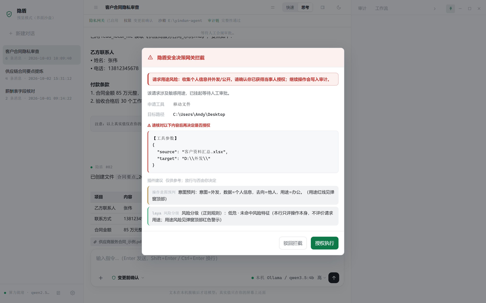
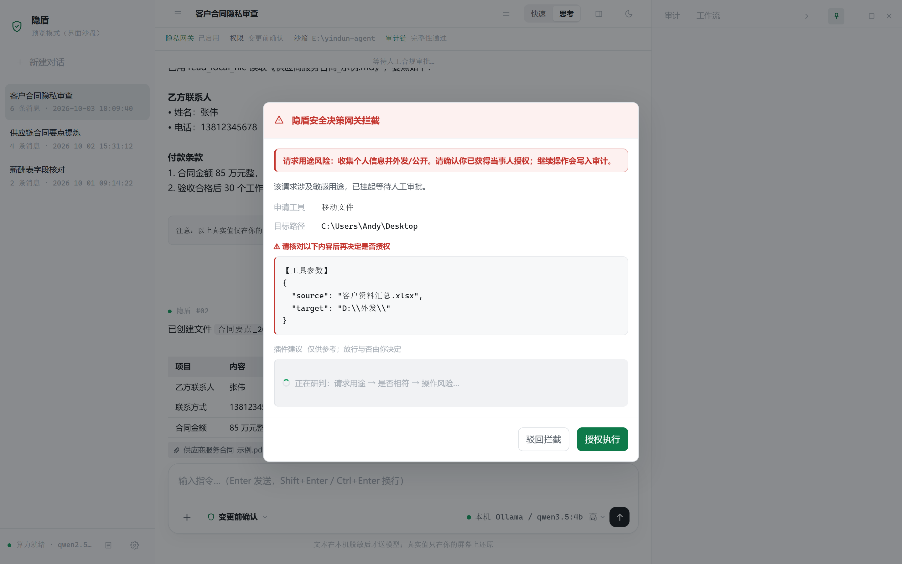
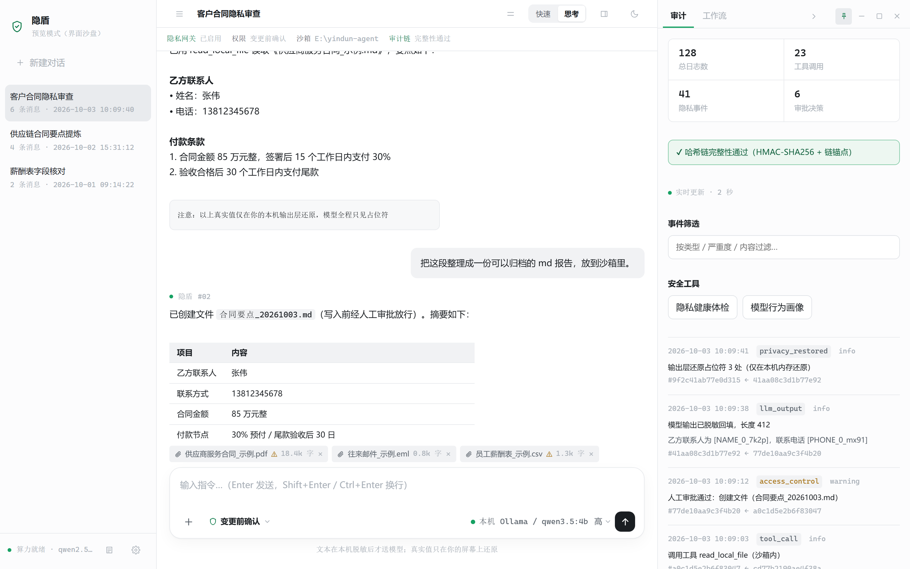
实测：执行白名单外的 tasklist 触发拦截，模型如实说明"系统未能执行该命令"，全程无命令执行副作用。
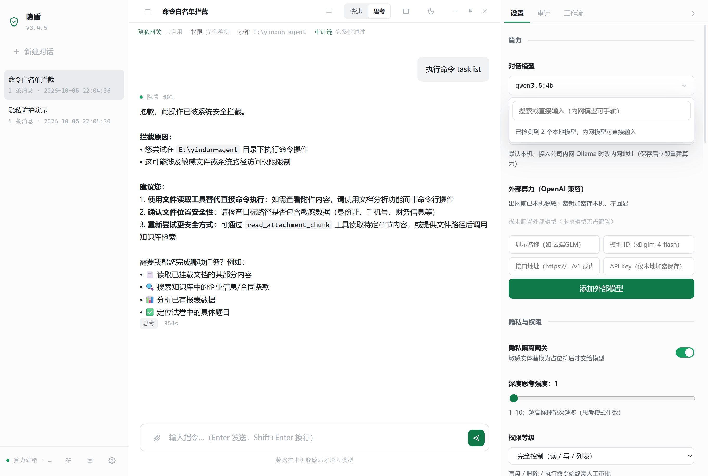
脱敏 RAG 知识库
机密文档"入库即逐块脱敏"，向量库只存占位符。实机演示（外部算力 GLM-4.7）：对已入库的《合同_隐盾项目.txt》提问，系统经 search_knowledge_base 检索后以占位符形态送云作答（出网内容已脱敏），回答再由输出层在本机还原——模型全程只见占位符。回归：test_kb_pipeline / test_e2e_local（含"检索工具被真实调用"断言）。已知边界：外部模型若自行改写占位符编号，该片段会以占位符原样显示。
入库顺序：必须先整篇脱敏、再切块——顺序颠倒时，长于单块（500 字符）的实体（PEM 私钥、长连接串）会被切碎成明文碎片入库。每块只保留本块用到的映射，跨块还原不串值；向量库元数据只留文件名。
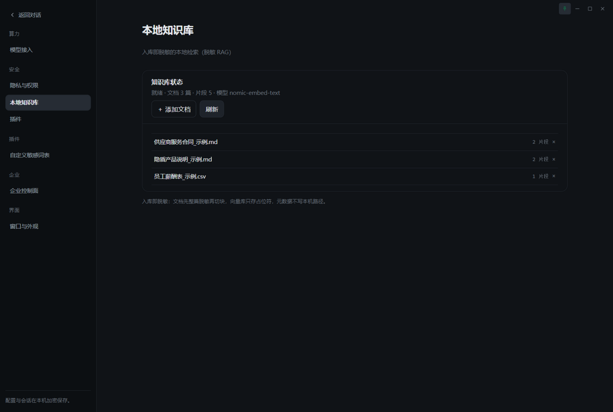
7 安全工程闭环
我们以"红队—修复—回归"的方式持续加固：先对系统做对抗性安全测试（攻击用例动态验证 + 通读源码审查），输出分级问题清单，逐项修复并将对抗用例固化为回归测试。下表列出与安全内核强相关的核心问题及其修复与对应提交：
| 核心问题 | 危害 | 修复 | 提交 |
|---|---|---|---|
| 命令执行为 shell=True + 子串黑名单，可被 cmd/powershell 绕过 | 任意命令执行，沙箱形同虚设 | 白名单 + shlex + shell=False + 参数级纵深拦截 | 357907f |
| "沙箱"默认放行任意绝对路径，策略 default=approve | 读桌面/写系统目录均被放行 | realpath+commonpath 越界判定，deny-by-default（V3.6.7 起升级为可配置的可读写范围：范围外按档位判定 + 必留审计 + 系统目录/凭据路径硬地板） | 357907f |
| 审批弹窗共用单一 Event，多工具待审时点一个=放行全部 | 审批旁路，高危操作绕过人工确认 | 逐请求审批 + 超时自动驳回 + 关闭残留弹窗 | e17fd83 |
| 工作流链路绕过隐私网关，合同原文直发云端 | 聊天侧脱敏在工作流侧失效，明文出网 | 所有 LLM 调用统一走 anonymize→invoke→deanonymize | 357907f |
| 审计日志在还原后记录，真实 PII 落盘 | 审计系统反成泄露源 | 落盘前统一掩码（复用完整脱敏管线） | a79645c |
| 占位符格式固定可预测，可被植入字面量劫持还原 | 恶意文档诱导写出他人明文 | 随机 nonce + strict 还原不回退明文 | a79645c |
| KeyManager 哈希链不覆盖 cipher_key | 可静默替换密钥而完整性校验不报警 | 完整性字段纳入密钥材料 | 357907f |
| 映射表明文 dict 落盘 | 拿到文件即还原全部真实隐私 | Fernet 加密存储 + DPAPI 包裹密钥 | 9150bf9 |
| 审计工具结果接口参数顺序颠倒 | 成功的工具调用被误判为失败，链路中断 | 修正调用方 + 调用点静态扫描回归测试 | e17fd83 |
| 人名识别漏当代高频大姓、5 位以上裸金额漏检 | 核心实体召回不足 | 姓氏/角色触发词补全 + 金额正则扩展（开发集回归复测通过；真实覆盖率改由留出集度量，见 5.2） | 252202c |
| 第二轮红队：脱敏替换逻辑按"首次出现的相同子串"定位，而非正则命中位置 | 同串先在非敏感处出现时，敏感字段残留明文（确定性泄露） | 改为按命中区间从右向左精确替换；捕获组取"首个真正参与匹配的分组" | 121f420 |
| 第二轮红队：命令白名单可被图灵完备入口穿透（python -c / -m / pip install / git -c） | 无需 shell 元字符即可任意代码执行 | 新增子命令级校验：python 仅限沙箱内 .py 脚本；pip/git 仅限只读子命令；git 拦危险开关 | 121f420 |
| 第二轮红队：审批弹窗只显示工具名与路径，不显示待执行内容 | 审批人看不到要执行的命令/写入内容（盲签） | 弹窗渲染完整命令与写入内容（含字数与截断提示） | 121f420 |
| 第二轮红队：取消采用 with ThreadPoolExecutor，退出时 wait=True | 取消仅 UI 假象：后台仍占算力，旧信号污染新气泡 | 显式 shutdown(wait=False) + 断开该轮全部信号（回归实测 0.33s 返回） | 121f420/b0599e0 |
| 第二轮红队：隐私回归用例阈值容忍 4 条已知泄露，且负样本与正样本自相矛盾 | 回归带病通过，泄露不被拦截 | 修复 4 条泄露根因，阈值 4→0、误伤 0；负样本按业务语义归位 | 121f420 |
| 第三轮自审：知识库"先切块、再逐块脱敏" | 长于单块尺寸的实体（PEM 私钥等）被切碎成明文碎片进入向量库 | 改为先整篇脱敏再切块（长实体已成占位符，切不开）；每块只存本块用到的映射 | V3.4.0 |
| 第三轮自审：占位符正则 [A-Z]+ 漏掉含下划线/数字的类型 | MEDICAL_RECORD / IDCARD15 / PRIVATE_KEY / ACCESS_TOKEN / PLUGIN_* 不参与检索重编号，多文档还原可能串值 | 正则补全类型字符集（下划线、数字） | V3.4.0 |
| 第三轮自审：向量库元数据写入本机完整路径 | 落盘面泄露本机目录结构（且该字段从未被读取） | 只存文件名；chunk id 改由文件名派生，哈希 MD5 → SHA-256 | V3.4.0 |
| 第三轮自审：审计"无 HMAC"标记从文件里读 | 抹掉该标记再用无密钥 sha256 重算整链即可通过校验（降级改写）；尾部截断亦不可发现 | HMAC 链锚点（条数+链头+历史 legacy 前缀），存放于密钥旁的用户目录；legacy 仅允许出现在锚定前缀内；缺失锚点需显式重建 | V3.4.0 |
| 复赛评审意见：命令执行允许 Python 等通用解释器，尚不构成严格执行沙箱 | 放行脚本以当前用户权限运行，可触达沙箱外资源 | V3.4.4：脚本 realpath 沙箱归属校验（符号链接/盘符相对路径拒绝）、环境收敛、审批弹窗脚本预览防盲签；V3.4.5：Job Object 进程容器（句柄即杀/进程数上限 64）+ 严格模式开关（禁用解释器）；并如实声明非 OS 级隔离 | V3.4.4/V3.4.5 |
| 复赛评审意见：附件全文存在明文持久化至会话文件的路径 | 与"关闭落盘泄露面"的表述不一致 | V3.4.4：附件快照 Fernet 密文段落盘 + 启动主动迁移存量明文 + 密文正向断言；V3.4.5：删除会话即刻清除其附件快照，全目录明文扫描回归 | V3.4.4/V3.4.5 |
| 复赛评审意见：评测基于规模有限的合成样本，"100% 召回、零泄露"不宜泛化 | 安全结论被过度外推 | V3.4.4：对抗性评测集（格式变体/零宽插入/已知边界显式记录）+ 文档内限定口径；V3.4.5：真实格式文档评测集（8 种格式全链路）；V3.4.6 根治：把"识别覆盖率"与"网关机密性"两条性质分开陈述，新增留出集评测（60 篇随机化语料、规则冻结后一次性运行、注入值与开发集零重合），全篇不再出现"召回 100%"式表述，并公开 50 例未覆盖形态清单 | V3.4.4→V3.4.6 |
| V3.4.6 留出集新发现：JSON 配置里键名带引号的写法（"password": "…" / "access_token": "…" / "api_key": "…"）整条不命中 | 真实配置文件中的口令与令牌明文出网（8 例） | 三个模式在键名与分隔符之间允许一个引号；留出集复测该类由 8 例未命中转为全部命中 | V3.4.6 |
| V3.4.6 留出集新发现：19 位非银联卡号（JCB/万事达等真实形态）不命中，且长数字串会被后续规则吃掉尾段 | 卡号漏检；更严重时形成"部分掩码 + 前段明文残留" | 银行卡各前缀分支长度统一放宽到 16–19 位并补尾段分组能力，仍由 Luhn 精验把关；新增"部分掩码"零容忍检测项 | V3.4.6 |
| V3.4.6 留出集新发现：合同最常见写法"甲方（采购方）：张伟"中的人名漏检 | 括号注释截断触发词窗口（8 例） | 触发词后允许跳过成对括号注释（限长、仍由姓氏表与提取器收口） | V3.4.6 |
| V3.4.6 评测器自身缺陷：开发集按类别专项测试只校验 4 位以上数字段；留出集度量一度把重名与"负样本落在实体内"计为漏检/误伤 | 检查口径弱于其表面含义，可能漏判"部分掩码"；度量污染会得出错误的漏检结论 | 专项测试改为全字面 + 占位符双断言；留出集文档内人名唯一化、负样本与注入值重叠时标记"不可测"而非误伤；新增评测日志留档每轮数值 | V3.4.6 |
| V3.4.5 真实文档评测新发现：脱敏后段规则命中先前占位符内部/跨越边界 | 交叉替换（如 [BANKC[ADDRESS_0_x]）使真实值不可还原、还原内容错乱 | 占位符对后续规则不透明（仅在非占位符片段上匹配，含插件识别器区间保护）；银行卡尾部不再吞换行；回归断言"脱敏→还原逐字一致" | V3.4.5 |
| 组员评审 BUG-0004：地址实体止于「路 / 街 / 大道」，门牌号 / 楼栋 / 房间号原样出网（实测「北京市海淀区中关村南大街 5 号院 3 号楼 1201 室」只脱敏到「…南大街」） | 门牌与房间号可定位到具体住户，破坏「出网零明文」不变量（带空格的写法尤其容易被漏） | 地址尾部补「数字 / 中文数词 + 号院·号楼·栋·座·单元·室·层…」可重复尾链，并容忍段间空格；尾链**只延长已命中的地址**（不凭空造命中），「订单号 / 型号 5 号」这类业务词仍不误伤 | V3.6.10 |
| 组员评审 BUG-0005：模型把 [NAME_0_x] 改写成裸 NAME_0_x（常见于反引号内）时精确替换整条漏还原，而审计按映射表条数报「已还原 6 处」 | 用户看到裸占位符，且审计统计与用户所见不一致（审计口径失真，信任基础受损） | 还原加容错：按「类型 + 随机码 → 类型 + 编号 → 该类型唯一候选」三级判定，**不唯一就保留原样**（绝不猜错值）；未能还原的处数在回答里如实提示；审计只统计**真的替换掉**的条数 | V3.6.10 |
| 组员评审 BUG-0001 / BUG-0002：审计目录迁移后「锚点缺失但链非空」被报成疑似篡改；锚点写入失败（Permission denied）只在日志里刷 ERROR，用户无从知晓（防篡改能力实际降级） | 合法迁移被误判为攻击；锚点失效时「尾部截断 / 降级改写」重新不可发现，与「审计不可篡改」卖点冲突 | 锚点缺失细分为「首次运行（静默初始化）/ 目录迁移（提示 + 一键重建）/ 真的丢失（可疑）」；写入失败回退到可用位置并**在界面上如实报出位置**，全部不可写时明确告警「锚点未生效（能力降级）」 | V3.6.10 |
7.1 可用性与诚实性整改（V3.6.10）
同一轮里还修掉了几类「产品能不能被信任」的问题——它们不属于安全内核，但直接影响评委与用户对系统的判断。这些问题的共同点是：失败被伪装成成功，或系统答成了什么与它声称自己是什么不一致。
| 现象（实测） | 为什么必须修 | 修复 |
|---|---|---|
| BUG-0003：回答只输出 2~3 个字（「我需要」「您好」「为了」）就标「已完成」，快速与思考模式均出现 | 核心对话间歇性失效，却被伪装成成功——用户/评委无法判断是模型错觉还是产品故障 | 识别「刚起头就断」（很短 + 无句末标点 + 用户这轮提的是实质问题，寒暄与纯数字短答不受影响）→ 让模型**重写一遍完整回答**（只重生成一次）；重写后仍是断句时，回答末尾如实标注「疑似被截断」并建议换更大模型 |
| BUG-0006：气泡模式标签与顶栏不一致（顶栏「思考 最高」，气泡写「快速 2s」） | 看板与答辩陈述的可信度受损（结合上一条会让人以为「思考模式根本没启用」） | 发送时把本轮模式**快照**进会话状态，标签只认快照——中途改设置也不会给已发出的那一轮贴错模式标签 |
| 工具调用依赖关键词触发：「桌面有多少文件」这类数量问句一个触发词都不命中 | 弱模型自己发挥成「我无法访问您的桌面文件夹」；用户以为智能体做不到——而它其实能读 | 改为**按症状纠错**：判据不看用户怎么问（关键词永远会漏），而看模型答成了什么（推诿话术「无法访问 / 没有权限 / 请你自己上传」与假成功声明「已成功创建」），命中且本轮一次工具都没用过就叫回来重做一次；提示词同步去掉动词依赖；原关键词分支退回兜底网 |
| 模型一次工具都没调，却回答「文件 aaa.txt 已成功创建在你的桌面上」（审计链确认该轮没有任何 tool_call，桌面也没有文件，审批自然没弹） | 用户会去桌面找文件、找不到才知道被骗；「没弹审批」还会被误读成审批机制失效 | 两道闸：症状纠错（见上）+ 最终**事实核对**——纠正后仍不改口时，在回答尾部明确写「本轮一次工具都没有调用，所以『已完成』并没有真的执行（审批也不会弹：审批只在真的执行时才出现）」并给出下一步 |
| 深化轮把简单问题带跑偏：问「这个目录里有多少文件」，被写死的「解读关键文件实现逻辑 / 总结项目技术亮点与风险」带走，最终答成「未找到代码文件，因此无法解读…」 | 用户的问题一个字都没答；看起来像智能体听不懂人话 | 深化指令**锚定用户原问题**（把问题原文写进指令）并明确「不要跑题、答完就给最终答案」 |
| exe 使用 PyInstaller 自带默认图标；界面多处文案是解释性长句（「像半成品，到处都是注释」） | 交付观感：产品与它的图标/文案不匹配，直接影响评委第一印象 | 生成定制**盾牌图标**（客户端品牌绿 / 控制端管理蓝，7 个尺寸；spec 显式引用，归档校验读 PE 资源核对像素）；界面文案做一次系统性收口——一行一件事、细节进悬浮提示、空态只留「一句结论 + 一个动作」，安全语义类说明压短但一句不删 |
7.2 隐私与判据的口径修正（V3.6.11）
这一批来自负责人的连续实测：问题都不在"能不能跑"，而在"系统说的话与它做的事对不上"——判据说「不符」而风险分级说「低危」、状态行说「敏感操作」；模型看到掩码值就自称「占位符」；一句话里姓名与手机同时出现却只脱了手机。
| 现象（实测） | 为什么是问题 | 修复 |
|---|---|---|
| 姓名漏脱敏：梁诚敬 13713068555 广州大学 计算机学院软件工程，男 19岁 只识别出手机（PHONE×1） | 无触发词人名属文档声明的已知边界（「宁漏不误伤」），但**同句既有姓名又有联系方式**时，这句本身就是一条个人信息记录；云端场景下姓名明文出网仍是实打实的泄露 | 新增共现判定：一句话/邻近窗口里已存在已确认的联系方式或证件类实体（手机/邮箱/身份证/银行卡/车牌/病历号…，此时它们已是占位符、坐标准确）→ 窗口内「姓氏表 + 1~2 字」候选一并按 NAME 脱敏；用既有收口与**机构名后缀黑名单**（公司/大学/学院/集团/银行/医院/中心…）防误伤——「王科技有限公司」不会被切出一个"人名"。无联系方式的孤立姓名仍不猜（边界不变） |
| 模型给掩码值加标签：写盘正文出现「电话占位符：13713068555」 | 模型看到 [PHONE_0_x] 后自作解释，把「占位符」写进了交付物；用户打开文件看到的是产品内部概念 | 常驻提示词新增规则 3.1：隐私掩码照原样用——不要解释、不要写「占位符」字样、不要改写它（落盘与显示时系统自动换回真值）。为守住「常驻提示词 ≤2000 字符」的既定约束，同步精简了两条工具说明与硬规则 1 |
| 审批建议被判「不符」：请求"在桌面创建 aaa.txt"被判成「与你的请求不符…指定了『系统物理桌面』目录，存在破坏性风险」 | 判官看到的是工具参数里那个本机工具的占位写法（target_directory="系统物理桌面"），小模型把它读成"系统目录/越权"；旁边风险分级那行同时说「低危」，三行自相矛盾 | 判据三改：① 参数净化——占位目录值不进判据（真实目标以 path 字段为准，那里已是解析后的绝对路径）；② 补上下文——把当前「可读写范围 + 权限档位 + 越界判定口径」一并交给判官，并明说"范围内容 + 档位要求审批 = 正常流程，不要判不符"；③ 限定结论范围——理由只讲"请求↔操作"的对应关系，禁止「越权/非授权/破坏性」这类定性（风险高低由风险分级那一路负责） |
| 三行文案互相打架：「插件建议：与请求不符」+「风险分级：低危」+「🚨 检测到敏感操作，等待人工审批」 | 同一轮里三个组件各说各话，观感不专业，也让人无法判断系统到底怎么看这次操作 | 审批状态行只表达它真正的职责：「✋ 需要你确认：修改文件（当前档位要求人工审批）」——触发审批的原因是档位，不是"危险"；风险等级只由风险分级那一路给 |
7.3 交付物：不能「看起来成功」
同一轮实测里还有两处"工具回了成功、东西却是坏的"，它们直接决定用户能否拿到可用的交付物。
| 现象（实测） | 为什么是问题 | 修复 |
|---|---|---|
| 生成的 .docx 打不开：让智能体「创建一个 aaa.docx，把信息写进去」，WPS/Word 打开提示「文件已损坏」（实测文件不是 zip、而是纯文本） | 这是最坏的一类失败：工具回报成功、交付物却是坏的，用户要到打开文件时才发现 | 按扩展名生成合法容器：docx→一行一段落（python-docx）、xlsx→一行一记录并按逗号/制表符/顿号分列（openpyxl）、pptx→一页幻灯片+文本框（python-pptx）；在已有文档上追加/替换也先解析正文、再重新生成容器；缺组件时如实报失败并建议改用 .txt，绝不静默产出坏文件 |
| 写进文件的正文里有占位符：aaa.docx 里留着 [PHONE_0_h5ko]，而界面上那段回答是还原过的 | 用户拿到的是"半成品交付物"；更本质的是写盘与展示用了两套映射口径（写盘只用了本轮映射，跨轮占位符换不回来） | 写盘参数改用累积映射并对 str/list/dict 递归还原；残留判定不依赖映射表非空（直接按占位符形状扫描，避免"映射为空 → 静默通过"）；仍有残留时在回答与状态行里如实写「有 N 处占位符未能还原」 |
7.4 可用性回归：假成功、假死与渲染残缺（V3.6.12）
组员对 V3.6.11 的评审与负责人实测又发现四处「看起来能用、实际不对」的问题，均已在源码层修复并固化为回归断言。
| 现象（实测） | 根因 | 修复 |
|---|---|---|
| 知识库「入库完成」但库是空的（Excel/PDF 导入后提示成功，列表仍为空） | `kb_add` 只要批处理没抛异常就 `ok=true`，而 `add_documents` 是**逐文件容错**的——「成功 0/2」也走成功分支；真实原因只活在 `details` 里，界面无出口。`is_available()` 又只查 Python 依赖，Ollama 没起也显示「就绪」 | `ok = success > 0`（全失败带第一条原因；部分成功 `partial=true`）；响应始终带 `summary`，界面**持久展示**失败文件与原因；新增 `embedding_ready()`（真问 `/api/tags`、1.5s 超时、30s 缓存），未就绪时禁用「添加文档」并写明 `ollama pull …` |
| 连续点击「置顶」把窗口点成未响应（桥接 12s 超时，只能杀进程） | pywebview 对每个 js_api 调用**新开线程**，前端无防连点 → 多线程并发写 WinForms `TopMost`（py-spy 栈可见 `set_on_top → i.TopMost`，其余线程全停） | 三层：后端窗口动作**串行化**（锁）；写入**调度到 UI 线程**（WinForms `Form.Invoke`，不可用时如实回退）；前端四个窗口按钮请求期间 `disabled`（连点只发一次）。置顶目标值改从**窗口真实状态**推导 |
| 主题连点：过渡互相打断、重复落盘 | 每次点击都起一次 View Transition + 写一次配置 | 点下**立即**切换；一轮连点只起一次过渡、只落盘一次 `dark_mode`（220ms 合并）；reduce-motion 与老 WebView2 降级不变 |
| Markdown 残缺与空白：`>` 引用行原样显示、`---` 原样显示、代码块前后大片空白 | 自写渲染器没有 blockquote / hr；每个空行都转成 ` `，再叠加 ` ` 外边距；且引用匹配按原文 `>` 之前先做了 `esc()` | 新增**引用块**（含 `> - 列表`）与**分隔线**（`---/***/___`）；连续空行收敛、块级元素前后不留空行；CSS 补 blockquote/hr 并收紧块间距。★ 引用匹配改为按 `esc()` 后的 `>`（第一版按 `>` 匹配完全没生效）。引用块内 HTML 仍严格转义 |
7.5 请求用途、知识库适用范围与长回答截断（V3.6.13）
本轮的共同主题是「操作正确 ≠ 用途正确」：审批链路已经能判定操作是否越权、是否与请求相符，却没有一层评价请求用途本身；知识库检索也缺少适用范围，通用知识题被反复拉去查库。四处问题均已在内核/插件层修复并固化为断言。
| 现象（实测） | 根因 | 修复 |
|---|---|---|
| 「搜索桌面所有个人信息，整理给我我要出售」的审批弹窗显示「与你的请求相符」＋「低危」 | 判官只比对「操作 ↔ 请求」，laya 只评「操作本身」，没有一层评价用途；且两条建议都只是概率/规则结论，被用户读成背书 | 新增内核 usage_policy（确定性）：收集/整理 + 个人信息 + 出售/转卖/变现 → 在模型与工具之前直接拒绝（零模型调用、零工具、写审计）；+ 外发/公开 → 允许本机整理但弹窗顶部红色警示。红线命中时 decision_hint 整条抑制、laya 标注「只评操作本身」；新增可选插件「操作意图预判」先说明意图/数据/去向 |
| 审批弹窗先出上半部，约半秒后插入两条建议，整体下移抖动 | 建议由本地模型/插件异步征集，旧实现先清空再插入，没有占位 | 显示「正在研判：请求用途 → 是否相符 → 操作风险…」占位，按两条建议预留高度 + 旋转动画；8 秒未返回只改文案；结果到达就地替换；prefers-reduced-motion 关闭动画 |
| 「有没有 O(n) 的排序算法，请你研究」连查 4 轮知识库、每轮弹审批，最后答「根据知识库检索结果」 | 旧逻辑只要知识库有文档，就把任何「简单问题」改写成「请先调用 search_knowledge_base」；只读工具的重复短路在审批之后，同参数重复仍会弹窗 | 新增 _looks_like_kb_question()：仅本机资料信号（合同/报表/规章/本单位/文档里…）强制检索，通用知识/算法/代码/研究题直接推理；同参数只读调用在审批前短路；结果标注「片段不是全文」，相关度按 1/(1+距离) 换算并给低相关提示；第二次检索起要求停止重复 |
| 长回答停在「堆排序…（最好、平均」，气泡仍标已完成 | Ollama done_reason=length（单次 num_predict 用尽）被当成自然结束；深度思考时内部推理也占该预算 | 识别 done_reason/finish_reason=length，从断点自动续写一次并拼接、同步消息链与落库；续写仍到上限才提示「回复『继续』」；深度思考变体 num_predict 4096→8192；_ensure_reply_persisted 改为以最终答复替换不一致链尾 |
test_usage_policy（41 条判定 + 三层建议一致性 + worker 红线零模型调用 + 审批 payload 警示）；test_reply_feedback 新增续写三例；test_ui_paths 新增研判占位与红线占位断言7.6 可用性收口：不可用说明与状态一致性（V3.6.14）
负责人实测又指出两处「不像成品」的细节，均属状态呈现而非核心逻辑，但直接影响可读性：
| 现象（实测） | 修复 |
|---|---|
模型不可用的提示是一堵墙：四五行字里把原因、连接错误、手动添加、ollama serve、重新检测、换模型、ollama pull 全堆在一起，同一句「没有检测到可对话的模型」出现两次 | _diagnose_llm_unavailable 按真实原因只给一条原因 + 一条下一步（连不上 → 启动 Ollama + 重新检测；只有嵌入模型 → ollama pull 或换模型），并加长度（≤60 字）与不重复断言 |
| 选「思考」却显示「[快速回答] 直接回答问题…」：直答快路径两种模式都会走，状态行写死了快速模式的名字 | 状态行前缀按 think_mode 取（[思考] / [快速回答]）；转入工具推理与空产出两条状态同样跟随 |
| 同屏矛盾：发送被拒时底部仍停在「算力就绪」，与错误气泡里的「连不上 Ollama」并存 | 发送因算力不可用被拒时顺手重算并广播 llm_status（ready=false + 原因） |
test_agent_service 新增 4 条（短说明 / 单一动作 / 不重复 / 拒发时状态同步）；test_reply_feedback 新增 2 条（两种模式的状态前缀各自正确）7.7 输入区改版：把"当前放得有多开"放在手边（V3.6.15）
负责人给出 ZCode 新版输入区作为参考后，界面按同一信息层级重排：**左侧只放输入相关动作，右侧只放会话级设置与发送**。改版不改变任何权限/审批语义，只减少"模型名、权限、思考档位挤在一行"造成的误读。
| 区域 | 改版后 |
|---|---|
| 左下：输入动作 | ＋ 挂载与**权限胶囊**同组；权限自动/完全档整颗胶囊着色（琥珀/红），一眼看出当前放得有多开 |
| 右下：会话设置 | 模型名 + 思考档位并排，读作「本机 Ollama / qwen3.5:4b 高 ∨」；只有整簇末尾一个箭头，避免"两个箭头各管一半" |
| 发送与忙碌 | 发送键为 32×32 圆角方形上箭头；推理中切换为方形停止键，模型名左侧出现 13px 小转圈（空闲隐藏、不占位） |
| 弹层 | 模型 / 权限 / 思考三个弹层统一为 12–14px 圆角卡片；模型弹层仍保持"供应商列 + 模型列"两级，不引入搜索框 |
test_ui_paths 新增【27】6 条（左权限 / 右簇 / 方形发送 / 转圈隐藏与忙碌切换），并更新思考触发器断言；报告配图同步为 V3.6.15 画面（图 3、3b、7、8）8 测试与质量保障
项目建立 23 个测试/评测套件（另有 `test_e2e_local.py` 本地大模型端到端实测，需 YINDUN_E2E=1 显式开启），覆盖隐私引擎、审计链（含锚点）、留出集评测、**控制面（链删改/只收紧/不泄明文/并发）**、记忆、工作流、知识库管线、插件体系、**请求用途红线**与窗口几何；三轮自审与复赛整改发现的问题全部固化为回归用例。全部套件退出码 0（"知识库"为集成测试，需本地 Ollama，离线时明确跳过）。
| 测试套件 | 覆盖范围 | 结果 |
|---|---|---|
| privacy_eval（攻防评测） | 黑盒/白盒/劫持/注入/无密钥 9 项实验（开发集 13 篇 / 41 实例，作回归基线） | ✅ 全部达标 |
| privacy_holdout_eval（V3.4.6 新增） | 留出集评测：60 篇随机化语料 / 280 个注入值 / 80 个负样本；注入值与开发集零重合自检；在册 / 未覆盖 / 全量三口径分别统计；往返一致与"部分掩码"零容忍；低于已记录基线即判回归；每轮数值写入评测日志 | ✅ 在册 222/230 · 全量 222/280 |
| test_control_plane（V3.5.0 新增） | 控制面七组：入参校验（类型/长度/条数/深度）；审计链删改六种手法必被发现；策略降级键整包拒绝与"只收紧"四条单调不变式（含幂等）；鉴权与令牌只存哈希；出网不泄明文（用明文 PII 假审计条目验证）；静态资源防穿越与请求体上限；并发读 12 线程 × 6 轮 + 并发写 4 线程 | ✅ 全部通过 |
| privacy_audit_test（隐私回归） | 46 项正样本脱敏 + 18 项负样本零误伤 + 落盘明文扫描 | ✅ 泄露 0 / 误伤 0（阈值 0） |
| test_command_whitelist | 16 项高危命令入口必须拦截 + 3 项只读用法必须放行 | ✅ 16/16 拦截 |
| test_worker_cancel | 慢速模型下取消必须立即返回（不等待在途请求） | ✅ 0.33s（模型需 5s） |
| test_privacy_engine | 实体识别/脱敏/还原/nonce/strict/接口兼容 | ✅ 6/6 + 3 项专项 |
| test_audit_log | 哈希链/防篡改/调用点一致性扫描 + 链锚点（降级改写、尾部截断、锚点改写均须被识破） | ✅ 19/19 |
| test_memory_optimize | 摘要压缩/跨轮还原/序列化 | ✅ 6/6 |
| test_plugins（V3.4 新增） | 插件宿主契约：钩子分类与禁用能力黑名单、manifest 校验、依赖门禁、启停持久化、载荷净化（越界/超长/跨行/重叠丢弃）、配置读写越界拦截、自检 | ✅ 全部通过 |
| test_plugin_capabilities（V3.4 新增） | 能力端到端：补充识别进入脱敏并计入审计、停用即收回；插件模板高危步骤被强制人工审批、不可覆盖内核模板；插件解析优先且内核格式不被顶替；插件导出渲染 + 内核格式兜底；能力变更留痕 | ✅ 全部通过 |
| test_laya_risk（新增） | 内置插件 laya 风险分级：requires 留空可无 laya 启用；无模型时自动回退正则规则（删除/格式化→高危、写入/外发→中危、只读→低危）；规则文件热改生效、非法行跳过并告警；backend.txt 强制模型/正则；stub 验证模型打分与推理失败回退；停用即收回、自检 | ✅ 全部通过 |
| test_usage_policy（V3.6.13 新增） | 请求用途红线：出售/外发个人信息 → 拒绝/警示（含「外卖 / 买卖」负例与正常整理正例）；三层建议不自相矛盾（decision_hint 抑制、laya 只评操作、intent_guard 只补细节）；worker 红线时模型零调用、零工具且拒绝回答落库；审批 payload 带用途警示、正常请求不带 | ✅ 全部通过 |
| test_privacy_adversarial（V3.4.4 新增） | 隐私对抗集：分隔符/全角/国际区号/零宽字符插入/结构化上下文（JSON/表格/CSV）等 14 项格式变体必须命中；订单号/日期/版本号等 6 项负样本零误伤；"(at) 文本混淆"与"非 Luhn 数字串"作为已知边界显式记录并与声明一致 | ✅ 全部通过 |
| test_privacy_docs_eval（V3.4.5 新增） | 真实格式文档评测：txt/md/csv/html/eml/docx/xlsx/pdf 8 种真实格式走完整解析链路（解析 → 风险报告与正文分离 → 脱敏 → 还原 → 送模型上下文 → 会话落盘扫描），断言正文与报告中的部分掩码片段（如 138****5678）不进入模型上下文、业务数字零误伤；并含占位符不透明性回归（脱敏→还原逐字一致，随机 nonce 多次采样） | ✅ 全部通过 |
| privacy_audit_test 增补（V3.4.5） | 占位符不透明性回归：后续规则命中占位符内部/跨越边界即判失败（曾致真实值不可还原），随机 nonce 采样 180 轮 | ✅ 往返逐字一致 |
| test_kb_pipeline（V3.4 新增） | 知识库文本管线（不依赖向量库/网络）：占位符类型解析（含下划线/数字/PLUGIN_*）、长实体先脱敏后切块不被切碎、分块映射隔离、元数据无本机路径 | ✅ 全部通过 |
| test_workflow / test_knowledge_base | 工作流/审批链/入库检索/向量库零明文 | ✅ 通过（知识库需 Ollama 在线） |
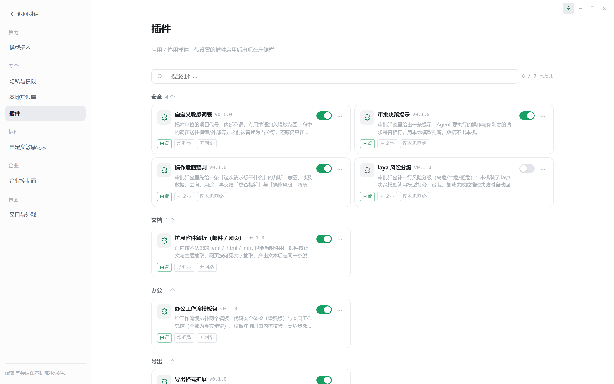
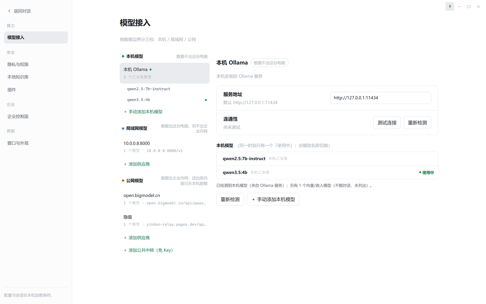
9 结论与展望
隐盾把"让大模型安全地处理涉密办公数据"从使用约定下沉为架构约束：以内存级脱敏网关关闭出网与落盘泄露面，以沙箱/白名单/熔断审批约束物理副作用，以哈希链审计实现可追溯且自身不泄露。效果陈述按两条性质分开：网关机密性是架构保证（对已识别实体：出网明文 0、还原劫持 0/500、白盒持久化与审计命中 0、往返逐字一致 60/60），识别覆盖率是经验测量（留出集 222/280，其中声明支持写法 222/230，并公开 50 例未覆盖形态清单）——本报告不作任何覆盖率承诺，效果读数一律带分母与限定。核心问题均以 git 提交与回归测试留痕，形成"发现—修复—验证"的工程闭环；本轮留出集自身也复现了这一闭环：发现三类实现盲区（JSON 引号键、括号注释人名、19 位卡号）→ 修复 → 换种子复测。V3.5.0 把系统从桌面单机推向企业部署形态（§9.1）：控制面只汇总掩码内容与元数据、只能用"收紧"的方式下发策略、并以外部锚定补强审计链的尾部删改检测——集中管理的能力是加上去的，前面各节的性质一个都没减。V3.6.13 进一步把判定从"操作是否合规"推进到"用途是否合规"：确定性用途闸门在模型与工具之前拒绝"收集个人信息用于出售/牟利"，把"外发个人信息"的红色警示放到审批弹窗最上方，并公开知识库检索的适用范围与"检索结果是片段、不是全文"的边界——安全产品不能只回答"这一步能不能做"，还要先回答"这件事该不该做"
同一约束也决定了扩展方式（V3.4）：判定权留在内核、能力开放给插件，插件只能扩大保护范围或增加可用性，不能缩小保护范围——这让系统可以持续长大，而"安全"不随扩展而稀释。
9.1 企业部署形态：控制面（V3.5.0）
单机形态回答不了企业最常问的一句话——"两百台机器怎么管"。控制面（`yindun/control/`）把这个问题接住， 但它的设计不是"再加一个服务器"，而是让集中管理不去破坏前面七节建立的性质。三条边界写死在代码里：
① 控制面架构上拿不到明文
它看到的内容等于端点本地审计落盘的内容，一个字不多——审计在落盘前已统一掩码（§5.3.7），上报前还会再过一遍脱敏管线做纵深防御；映射表真实值由 Fernet 加密、主密钥经 DPAPI 绑定端点当前 Windows 用户，因此即便控制面拿到映射表也解不开。控制面的数据边界是"掩码内容 + 元数据"，不是"原始数据"：敏感路径在这边只以 [SENSITIVE_PATH_0_xxxx] 形态出现，模型提示词与回答从不经过控制面。
② 策略只能收紧，不能放行
可下发项仅四类：敏感路径（并集）、审批下限（取更严）、允许的模型与插件（交集）、强制严格模式（或）。脱敏豁免、审批放行、白名单放行、审计开关没有任何下发通路——键白名单与"降级键"检测会整包拒绝（anonymize/bypass/auto_approve/whitelist…），端点侧还有单调合并兜底。因此有一个可检验的结论：控制面被完全攻破，它能做到的极限也只是"让端点管得更严"，放行不了任何一次脱敏豁免或审批跳过。这与 §3.1"判定权不可外包"是同一个决策。
③ 审计链头外部锚定
§6 承认过一条残余局限：能改写用户目录的攻击者可以连本地锚点一起重做。控制面逐次保存 (条数, 链头, legacy 前缀) 的时间序列，把"本地可重写"的证据变成"远端只增不改"的证据——尾部截断、同长度改写、中间缺口、批内断链、legacy 前缀变短、端点自报锚点不可信，六种手法都会被检出。同时如实声明边界：服务端没有 HMAC 密钥也不该有，所以它证明的是"自首次锚定起链自洽且未被删改"，不能验证 HMAC 真伪，也覆盖不到首次上报之前的历史；端点失联只呈现"最后上报时间"，不等于安全。
④ 默认关闭、本机留痕、不做整机监控
端点上报默认不启用（"数据不出网"是本产品的立身之本，集中管理必须是显式选用，绝不静默上报）；每次上报成功/失败都写入本地审计（control_report 事件），用户有权知道"什么离开了这台机器"；覆盖范围仅限隐盾自己经手的文件与命令事件，不是系统级 DLP，也不做模型流量代理——用量只上报计数与体量。
实现与验证：HTTP 服务与存储全部使用 Python 标准库（SQLite + http.server），不新增任何依赖，单文件 exe 交付形态不受影响；core/ 除新增一个审计事件类型外零改动。控制台与主产品同源设计语言（灰阶 + 单一强调色 + 等宽数据），五页：态势总览 / 事件台账 / 端点资产 / 策略下发 / 模型用量。tests/test_control_plane.py 七组用例锁住上述性质（六种删改手法、降级键与单调不变式、令牌只存哈希、出网不泄明文、并发读 12 线程 × 6 轮）。原型边界如实声明：默认只监听回环、单一管理令牌、无多租户 RBAC、无 TLS、无速率限制、端点侧尚无定时上报调度器、策略尚未接到内核策略引擎——要对外提供服务必须补齐这些前提，我们不把原型说成产品。
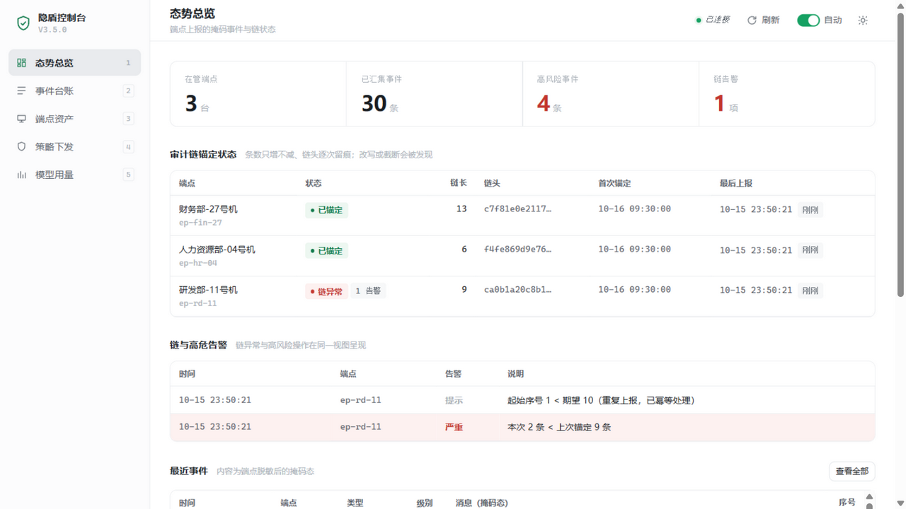
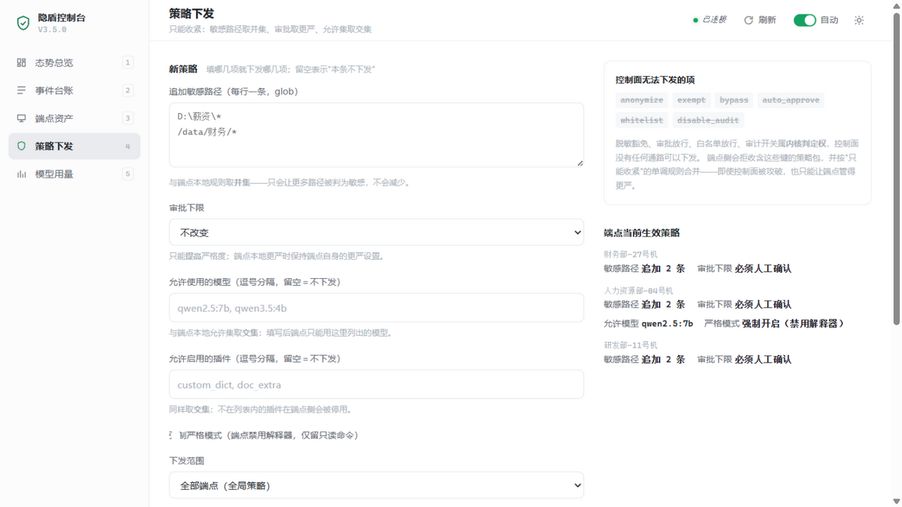
anonymize/exempt/bypass/auto_approve/whitelist/disable_audit 一律被删除线划掉），把"判定权归内核"这条架构决策直接摆在操作员面前。下一步
- 收掉留出集暴露的在册缺口：补复姓姓氏表（成本极低）；并把"每次识别规则变更即换种子重跑留出集"固化为发布前流程；
- 引入轻量中文 NER补充规则式识别——5.4 节清单中最大的一块（表格单元格人名、顿号列举、无触发词人名）都源于"人名依赖触发词窗口"，这正是 NER 的用武之地；
- 补齐汉字大写金额识别；点/斜杠分隔符变体须先解决与 IPv4 地址的歧义（归一化后长度冲突），否则"多拦"会变成"误伤"；
- 工具调用结果文件系统侧二次核验，杜绝小模型幻觉式"假成功"；
- 控制面从原型走向可用：把策略接到内核策略引擎（敏感路径并入沙箱判定、审批下限提升为 local 策略）、端点侧定时上报调度、失联告警维度、TLS 与多租户鉴权——这些是"对外提供服务"的前提，做完之前不宣称可生产；
- 在更大真实语料上扩展攻防评测（含真实脱敏文档而非程序化生成），量化召回—误报权衡曲线，并引入差分隐私式度量作为补充。
本文档中的个人信息（张伟、13812345678 等）均为公开测试样例，不涉及任何真实个人数据。评测与截图取自真实运行环境（Windows 11 · RTX 3060 Ti · Ollama qwen2.5-7b / GLM-4-Flash 双算力）。